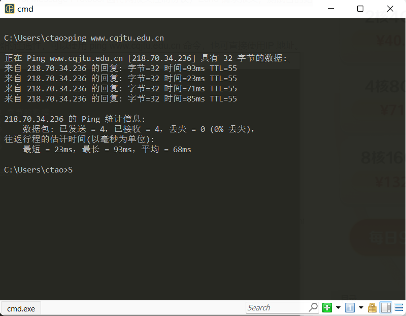
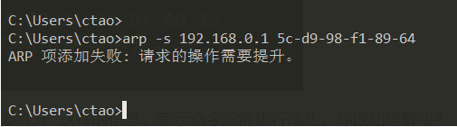
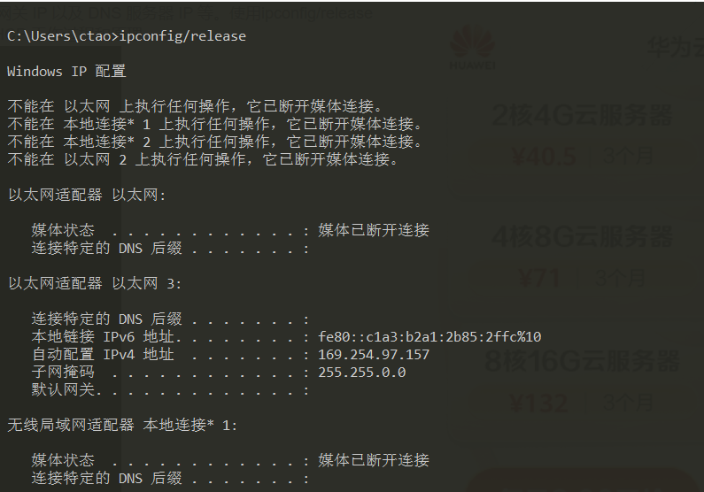
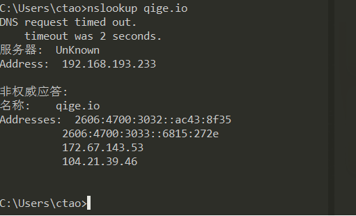

ipconfig 是微软操作系统的计算机上用来控制网络连接的一个命令行工具。它的主要用来显示当前网络连接的配置信息（/all 参数）。
我的网络配置:
ip地址: 192.168.193.167
子网掩码: 255.255.255.0
默认网关：192.168.193.233
旁边的网络配置
不同点: 物理地址，IP地址
相同点: 子网掩码，默认网关
问题：与旁边的计算机是否处于同一子网？
答： 是处于同一子网中。我的IP地址与子网掩码AND后是10.60.0.0，相邻计算机的IP地址与子网掩码AND后也是10.60.0.0
PING （Packet Internet Groper），因特网包探索器，用于测试网络连接量的程序 。ping 是工作在 TCP/IP 网络体系结构中应用层的一个服务命令， 主要是向特定的目的主机发送 ICMP（Internet Control Message Protocol 因特网报文控制协议）Echo 请求报文，测试目的站是否可达及了解其有关状态。
要测试到某计算机如 重庆交通大学 Web 服务器的连通性，可以使用 ping www.cqjtu.edu.cn 命令，也可直接使用 IP 地址。 请掌握使用该命令后屏幕显示的反馈回来信息的意思，如：TTL、时间等。
此处尝试了ping了4次。其中TTL（8bit字段-ipv4）代表了ping发出去的那个测试数据具有的生命周期。计算方法为ttl向上最接近的2的n次方。例如此处最接近64.64-55=9.说明从主机到以上www.cqjtu.com这个地址经过了9次跳转。生命周期还有55。每跳一次就减1。 时间就代表了从主机到那个地址经过的时间就是延迟。
ping 自己的ip

使用 ping/? 命令了解该命令的各种选项并实际使用。
问题：假设你不能 ping 通某计算机或 IP，但你确定该计算机和你之间的网络是连通的，那么可能的原因是什么？该如何处理能保证 ping 通？
采用由近及远的连通性测试来确定问题所在，测试自己计算机的状态，若成功，则说明本机网络软硬件工作正常，否则说明问题出现在本机，需检查本机TCP/IP配置即网卡状态等；若成功，说明本子网内部工作正常，否则问题出现在本机网络出口到交换机之间，需检查本机网卡到交换机的连线等；ping 192.168.1.233，测试到网关的连通性，若成功，说明本子网出口工作正常，否则问题出现在网关，需报告给网管；ping www.baidu.com，测试到百度的连通性，若成功则没有问题，否则问题出现在网关以外，自己无法解决。
问题二：假设ping 14.215.177.39没有问题，但ping百度的域名 www.baidu.com不行，那么可能的原因是什么？如何进行验证和解决？？
先ping ip成功说明网络是通的。域名ping不通，说明域名解析可能有问题，检查dns服务器配置问题，
TRACERT (Trace Route 的组合缩写)，也称为路由追踪，该命令行程序可用于跟踪 Internet 协议 （IP） 数据包传送到目标地址时经过的路径。
要了解到某计算机如 www.baidu.com 中间经过了哪些节点（路由器）及其它状态，可使用 tracert www.baidu.com 命令，查看反馈的信息，了解节点的个数。
222.176.65.185 中国 重庆 重庆市 电信
192.168.1.1 内网IP 内网IP
113.96.4.162 中国 广东省 广州市 电信
ping.pe 这个网站可以探测从全球主要的 ISP 到某站点如 https://qige.io 的线路状态，当然也包括各线路到该主机的路由情况。请使用浏览器访问 http://ping.pe/qige.io 进行了解。
问题一：tracert 能告诉我们路径上的节点以及大致的延迟等信息，那么它背后的原理是什么？本问题可结合第二部分的 Wireshark 实验进行验证。
答：向不同ip发送具有TTL值生命周期的数据包（ICMP），在路径上每一次路由器转发数据包都要把TTL减小一个，当TTL减为零的时候，路由器发送一个已超时的信息返回发出地址源头，或者在路途中找到了目的地址也会返回信息。
问题二：在以上两个实作中，如果你留意路径中的节点，你会发现无论是访问百度还是棋歌教学网，路径中的第一跳都是相同的，甚至你应该发现似乎前几个节点都是相同的，你的解释是什么？
答：因为在子网下，想要进入互联网都需要经过相同的网关，如果是校园网的话经历相同的节点或许会更多。
问题三：在追踪过程中，你可能会看到路径中某些节点显示为 * 号，这是发生了什么？
答：节点没有进行信息的反馈则会返回*，也有可能是路由节点出现了问题。
ARP（Address Resolution Protocol）即地址解析协议，是用于根据给定网络层地址即 IP 地址，查找并得到其对应的数据链路层地址即 MAC地址的协议。 ARP 协议定义在 1982 年的 RFC 826。
运行 arp -a 命令查看当前的 arp 缓存， 请留意缓存了些什么。
然后 ping 一下你旁边的计算机IP（注意，需保证该计算机的 IP 没有出现在 arp 缓存中，或者使用 arp -d * 先删除全部缓存），再次查看缓存，你会发现一些改变，请作出解释。
将IP地址解析为MAC地址的协议，缓存了静态以及动态的mac地址。静态地址不起作用。
请使用 arp /? 命令了解该命令的各种选项
一般而言，arp 缓存里常常会有网关的缓存，并且是动态类型的。
假设当前网关的 IP 地址是 192.168.0.1，MAC 地址是 5c-d9-98-f1-89-64，请使用 arp -s 192.168.0.1 5c-d9-98-f1-89-64 命令设置其为静态类型的。

可以修改指定ip地址的时候需要使用netsh命令。netsh i i show in找到指定Idx, netsh -c “i i” add neighbors 【Idx】 【IP地址】【mac地址】修改指定IP的mac或用管理员身份运行cmder
问题一：在实作三中，为何缓存中常常有网关的信息？我们将网关或其他计算机的arp信息设置为静态有什么优缺点？
在进行数据传输的时候通常需要经过多个网关，arp会自动记录网关的信息方便下次进行数据传输的时候快速找到网关地址。 优点：提高了安全性 缺点：难以维护arp列表，如果有一个错误的信息很难将它分别出来。静态的信息是在太多，不像动态的就那么几个很容易清理和调试。
DHCP（Dynamic Host Configuration Protocol）即动态主机配置协议，是一个用于 IP 网络的网络协议，位于 OSI 模型的应用层，使用 UDP 协议工作，主要有两个用途： 1、用于内部网或网络服务供应商自动分配 IP 地址给用户 2、用于内部网管理员对所有电脑作中央管理 简单的说，DHCP 可以让计算机自动获取/释放网络配置。
一般地，我们自动获取的网络配置信息包括：IP 地址、子网掩码、网关 IP 以及 DNS 服务器 IP 等。使用 ipconfig/release 命令释放自动获取的网络配置，并用 ipconfig/renew 命令重新获取，了解 DHCP 工作过程和原理。

对于ipconfig/renew,操作时无反应，无法成功释放
搜寻答案来说：检查硬件是否正常运行，开启DHCP模块
问题一：在Windows系统下，如果由于某种原因计算机不能获取 DHCP 服务器的配置数据，那么Windows将会根据某种算法自动配置为 169.254.x.x 这样的 IP 地址。显然，这样的 IP 以及相关的配置信息是不能让我们真正接入 Internet 的，为什么？既然不能接入 Internet，那么Winodws系统采用这样的方案有什么意义？
为了让DHCP故障的设备不因为没有ip而被连接不上。因为自动配置的IP地址和信息只是短暂性的解决计算机不能获取 DHCP 服务器的配置数据的问题，要真正的接入Internet还是得本身计算机的正确IP地址
无论是使用 TCP 还是 UDP，任何一个网络服务都与特定的端口（Port Number）关联在一起。因此，每个端口都对应于某个通信协议/服务。 netstat（Network Statistics）是在内核中访问网络连接状态及其相关信息的命令行程序，可以显示路由表、实际的网络连接和网络接口设备的状态信息，以及与 IP、TCP、UDP 和 ICMP 协议相关的统计数据，一般用于检验本机各端口的网络服务运行状况。
Windows 系统将一些常用的端口与服务记录在 C:\WINDOWS\system32\drivers\etc\services文件中，请查看该文件了解常用的端口号分配。
使用 netstat -an 命令，查看计算机当前的网络连接状况。更多的 netstat 命令选项，可参考上面链接 4 和 5 。
DNS（Domain Name System）即域名系统，是互联网的一项服务。它作为将域名和 IP 地址相互映射的一个分布式数据库，能够使人更方便地访问互联网。DNS 使用 TCP 和 UDP 的 53 号端口。
Windows 系统将一些固定的/静态的 DNS信息记录C:\WINDOWS\system32\drivers\etc\hosts 文件中，如我们常用的 localhost 就对应127.0.0.1 。请查看该文件看看有什么记录在该文件中。
解析过的 DNS 记录将会被缓存，以利于加快解析速度。请使用 ipconfig /displaydns 命令查看。我们也可以使用ipconfig /flushdns 命令来清除所有的 DNS 缓存。
删除缓存后在查看
使用 nslookup qige.io 命令，将使用默认的 DNS 服务器查询该域名。当然你也可以指定使用 CloudFlare（1.1.1.1）或 Google（8.8.8.8） 的全球 DNS 服务器来解析，如：nslookup qige.io 8.8.8.8，当然，由于你懂的原因，这不一定会得到正确的答案。

问题一：使用插件或自己修改hosts文件来屏蔽广告，思考一下这种方式为何能过滤广告？如果某些广告拦截失效，那么是什么原因？你应该怎么进行分析从而能够成功屏蔽它？
hosts文件在调用dns前截胡了，如果hosts里边有这个需要访问的ip就直接进入，不需要进入dns这个类似数据库一样的地方调用。 使用hosts修改后不生效原因：服务器设置了keep-alive，保持了长连接，只要不断开页面就不会重新解析域名
cache 即缓存，是 IT 领域一个重要的技术。我们此处提到的 cache 主要是浏览器缓存。 浏览器缓存是根据 HTTP 报文的缓存标识进行的，是性能优化中简单高效的一种优化方式了。一个优秀的缓存策略可以缩短网页请求资源的距离，减少延迟，并且由于缓存文件可以重复利用，还可以减少带宽，降低网络负荷。
打开 Chrome 或 Firefox 浏览器，访问 https://qige.io ，接下来敲 F12 键 或 Ctrl + Shift + I 组合键打开开发者工具，选择 Network 面板后刷新页面，你会在开发者工具底部看到加载该页面花费的时间。请进一步查看哪些文件被 cache了，哪些没有。
接下来仍在 Network 面板，选择 Disable cache 选项框，表明当前不使用 cache，页面数据全部来自于 Internet，刷新页面，再次在开发者工具底部查看加载该页面花费的时间。你可比对与有 cache 时的加载速度差异。
有cache的加载速度是加载：568 ms，没有cache的加载速度是加载：1.70s，图片的加载速度变慢，而且刷新的时候是张张的显示出来，不连贯